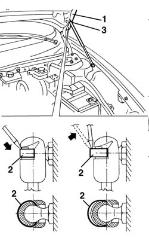
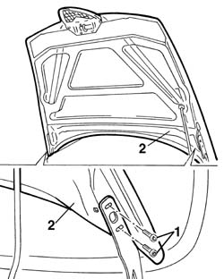

7210E20 R.R. BONNET LID
- Path
- Procedures > 72 PANELS AND FRAME > 7210 REMOVING REFITTING > 7210E external parts > 7210E20 R.R. BONNET LID
- Kind
- repair procedure (removal / refitting; the operation number is the code)
- Applies to
- all engines; all production periods
- Interactive page
- https://sloeber94.github.io/elrnDB-a156/en/#/3239046
Applies to: all engines; all production periods
 Removing
Removing
 Refitting
Refitting1. Lift the bonnet lid and support it with the help of a second operator.
2. Using a screwdriver, prise off (without detaching) the telescopic strut upper retaining springs
3. Release the telescopic strut upper attachment.

Applies to: all engines; all production periods
1. Undo the hinge bolts.
2. Remove the bonnet.

Applies to: all engines; all production periods
Refitting
RemovingCheck that the bonnet and hinges are undamaged.
Fit the bonnet.
Screw in the hinge bolts without tightening them.
Refit the upper attachments for the telescopic struts and fit the retaining springs.